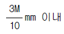
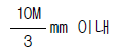
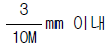
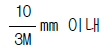
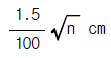
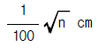
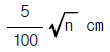
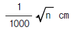
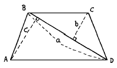

지적기능사 (2001-04-29 기출문제)
1과목: 지적일반(임의구분)
1. 지적도를 작성할 경우 행정구역의 제도에 있어서 행정구역계가 2종이상 겹쳐 있을 때의 제도방법은?
- 국계, 시도계가 겹칠 때는 시도계만 그린다.
- 국계, 시도계, 시군계가 겹칠 때는 시군계만 그린다.
- 국계, 시도계, 시군계가 겹칠 때는 전부 그린다.
- 시도계, 시군계가 겹칠 때는 시도계만 그린다.
(정답률: 50%)

2. 동심원을 그릴 때에 대한 설명으로 옳은 것은?
- 큰 원을 먼저 그린다.
- 작은 원을 먼저 그린다.
- 작은 원의 크기규격을 연필로 표시하고 큰 원을 먼저 그린다.
- 순서는 구애받지 않고 그린다.
(정답률: 33%)
3. 다음 중 지적법상 분류된 지목이 아닌 것은?
- 학교용지
- 철도용지
- 종교용지
- 아파트용지
(정답률: 69%)
4. 관상수를 재배하는 토지의 지목은?
- 임야
- 잡종지
- 전
- 과수원
(정답률: 36%)
5. 소관청은 축척변경이 필요하다고 인정될 때 어디의 의결을 거쳐야 하는가?
- 행정자치부 중앙지적위원회
- 지적협의회
- 축척변경위원회
- 대한지적공사 이사회
(정답률: 87%)
6. 다음 중 지적측량의 방법이 아닌 것은?
- 스타디아 측량
- 측판 측량
- 광파기 측량
- 사진 측량
(정답률: 50%)
7. 토지구획정리사업 완료지구내 토지의 최소 등록면적은?
- 0.01m2
- 0.1m2
- 1m2
- 10m2
(정답률: 35%)
8. 다음 중 지적도 도곽선의 역할이 아닌 것은?
- 방위표시의 기준
- 지목설정의 기준
- 도면접합의 기준
- 기초점 전개의 기준
(정답률: 45%)
9. 1/2400지역에서 삼사법으로 측정해야할 1필지의 면적은?
- 24m2 이하
- 48m2 이하
- 60m2 이하
- 120m2 이하
(정답률: 46%)
10. 우리나라 임야도의 축척은 모두 몇 종인가?
- 2종
- 3종
- 4종
- 5종
(정답률: 80%)
11. 도면의 재작성시 도곽선에 0.5mm이상의 신축이 있는 경우에 이를 보정하는 가장 적당한 방법은?
- 간접자사법
- 정밀복사법
- 직접자사법
- 전자자동제도법
(정답률: 42%)
12. 다음 중 도해지역의 일필지 이동측량 방법으로 적당한 것은?
- 경위의측량방법
- 측판측량방법
- 사진측량방법
- 광파기측량방법
(정답률: 23%)
13. 다음 중 도근측량 교회법의 교각으로서 가장 이상적인 것은?
- 20∼100°
- 30∼150°
- 30∼120°
- 40∼180°
(정답률: 45%)
14. 세부측량성과와 검사성과와의 연결오차를 인정하는 한계를 알 수 있는 공식은? (단, M은 당해 축척분모임)




(정답률: 34%)
15. 도면에 등록하는 지번과 지목의 글자크기로 맞는 것은?
- 1 ∼ 2mm
- 2 ∼ 3mm
- 3 ∼ 4mm
- 4 ∼ 5mm
(정답률: 74%)
16. 다음 중 지적측량에 이용되는 표고 측정기준점이 설치된 곳은?
- 목포
- 인천
- 부산
- 삼척
(정답률: 52%)
17. 다음 중 원칙적으로 지적측량을 할 수 없는 자는?
- 지적기술사
- 지적기사
- 지적기능자
- 지적산업기사
(정답률: 59%)
18. 지적삼각보조점의 수평각 측정은 몇 대회의 방향관측법에 의하는가?
- 1 대회
- 2 대회
- 3 대회
- 5 대회
(정답률: 65%)
19. 지번설정지역에 대한 가장 적절한 설명은?
- 같은 지번을 붙이는 지역
- 행정구역으로서의 리, 동
- 지번을 설정하는 단위지역
- 본번이 같고 부번을 연속한 일단의 지역
(정답률: 32%)
20. 다음 중 수치지적부상의 등재사항으로 옳은 것은?
- 토지소재, 지번, 좌표
- 토지소재, 지번, 지목
- 토지소재, 지번, 면적
- 토지소재, 지번, 경계
(정답률: 36%)
2과목: 지적측량(임의구분)
21. 도근점 표석대장의 등재사항이 아닌 것은?
- 기준원점명
- 도선등급
- 도선명
- 표지재질
(정답률: 11%)
22. 지적측량업무에서 사용하고 있는 면적측정방법이 아닌 것은?
- 삼사법
- 푸라니미터법
- 좌표면적계산법
- 사각형법
(정답률: 39%)
23. 도근측량에서 1등도선의 연결오차 한계는? (단, n은 각측선 수평거리의 총합계를 100으로 나눈수)
- 당해지역 축척분모의

이하 - 당해지역 축척분모의

이하 - 당해지역 축척분모의

이하 - 당해지역 축척분모의

이하
(정답률: 56%)
24. 다음 중 지적공부가 아닌 것은?
- 수치지적부
- 임야대장
- 임야도
- 지적약도
(정답률: 65%)
25. 지적도 또는 임야도에 등록할 수 없는 토지표시사항은?
- 지번
- 지목
- 지분
- 경계
(정답률: 52%)
26. 측판측량에 의한 세부측량시 경계위치는 기지점을 기준으로 하여 지상경계선과 도상경계선의 부합여부를 확인하여 정한다. 그 확인방법으로 타당하지 않은 것은?
- 현형법
- 도상 및 지상원호교회법
- 거리비교 확인법
- 도곽 확인법
(정답률: 25%)
27. 토지대장 및 임야대장에 등록하는 면적표시 방법 중 옳은 것은?
- 지적도의 축척이 1/1000 인 지역과 수치지적부시행지역 토지는 제곱미터이하 두자리 단위까지 표시한다.
- 1필지의 면적이 1제곱미터 미만인 경우에는 버린다.
- 지적도의 축척이 1/600 인 지역은 제곱미터이하 세자리까지 표시한다.
- 기본적으로 제곱미터를 단위로 한다.
(정답률: 77%)
28. 축척 600분의 1 도면상에서 길이 10cm 인 정사각형의 지상면적은?
- 5000 m2
- 3600 m2
- 2400 m2
- 1200 m2
(정답률: 48%)
29. 삼사법으로 면적측정을 할 경우 면적산출의 회수는?
- 1 회
- 2 회
- 3 회
- 4 회
(정답률: 44%)
30. 다음 중 토지를 1필지로 할 수 없는 경우는?
- 지목이 같을 때
- 소유자가 동일할 때
- 지번설정 지역이 상이한 1구획의 토지
- 다른 지목의 토지가 10%미만 일 때
(정답률: 55%)
31. 도선법에 의한 도근측량에서 일반적인 1도선의 점의 수는 얼마 이하로 하는가?
- 10점 이하
- 20점 이하
- 30점 이하
- 40점 이하
(정답률: 38%)
32. 다음 망 형태 중 지적삼각보조점의 망 구성에서 많이 쓰이는 것은?
- 교점다각망
- 삼각쇄
- 사각망
- 삽입망
(정답률: 40%)
33. 다음 중 소관청에서 필요하다고 인정하는 토지에 대한 수치지적부의 등록사항이 아닌 것은?
- 지번
- 좌표
- 부호 및 부호도
- 면적
(정답률: 37%)
34. 다음 중 지적공부의 오류 정정으로 인하여 면적이 감소하거나 경계가 변경된 때의 정정방법은? (단, 이해관계인이 있을 때)
- 소관청의 직권으로 처리한다.
- 이해관계인 끼리 청산한다.
- 이해관계인의 승락서에 의한다.
- 지적공부만 정정한다.
(정답률: 42%)
35. 지적공부에 등록할 수 있는 지목의 종류는?(관련 규정 개정전 문제로 여기서는 기존 정답인 3번을 누르면 정답 처리됩니다. 자세한 내용은 해설을 참고하세요.)
- 19
- 20
- 24
- 26
(정답률: 30%)
36. 토지를 분할할 경우 신구면적의 교차제한 공식은? (단, A=허용면적, M=축척분모, F=원면적임)
- A=0.0232M√F
- A=0.023M√F
- A=0.0262M√F
- A=0.026M√F
(정답률: 62%)
37. 지적도정리에서 합병, 경계정정시 구경계선의 말소는?
- 양홍의 평행쌍선
- 양홍의 단교차선
- 묵의 단교차선
- 묵 평형쌍선
(정답률: 49%)
38. 도곽신축이 0.5mm 이상인 지적도상의 토지를 분할하는 경우 분할후 각 필지별 결정면적을 구하는 방법으로 옳은 것은?
- 산출면적에 신구면적 오차를 배부하여 구한다.
- 산출면적에 도곽신축 보정계수를 곱하여 구한다.
- 보정면적에 신구면적 오차를 배부하여 구한다.
- 보정면적에 도곽신축량을 가감하여 구한다.
(정답률: 34%)
39. 다음 중 지적도에 등록할 사항이 아닌 것은?
- 제명 및 축척
- 도곽선 수치
- 지번색인표
- 지목 부호
(정답률: 34%)
40. 1/600 지역에서 아래 그림과 같은 4각형 토지의 면적을 측정하기 위하여 저변과 높이를 측정한 결과 a=16.2m, b=5.8m, c=6.2m 이었다. 사각형 ABCD의 면적은?

- 97.0 m2
- 97.2 m2
- 98.2 m2
- 96.0 m2
(정답률: 50%)
3과목: 지적공부정리(임의구분)
41. 지적공부를 복구하고자 할 때 소유자에 관한 등록사항을 결정할 수 있는 자료는?
- 소유자의 신청서
- 부동산 등기부
- 현지 측량결과도
- 이해 관계인의 협의서
(정답률: 40%)
42. 경계불가분의 원칙을 옳게 설명한 것은?
- 경계는 소관청만이 분리할 수 있다.
- 경계는 양쪽 토지에 공통이다.
- 도면상의 경계는 분리할 수 있다.
- 경계선의 폭이 큰 경우 중앙을 분리한다.
(정답률: 27%)
43. 측판측량방법에 의한 세부측량을 교회법으로 할 경우 방향각의 교각은?
- 30°이상, 120°이하
- 30°이상, 90°이하
- 90°이상, 150°이하
- 30°이상, 150°이하
(정답률: 32%)
44. 다음 중 행정구역 경계의 동,리계에 대한 제도방법으로 옳은 것은?
- 실선 3mm와 허선 2mm로 연결하고 허선에 0.3mm의 점 1개를 그린다.
- 실선 3mm와 허선 1mm로 연결하여 그린다.
- 실선과 허선을 각각 3mm로 연결하고 허선에 0.3mm의 점 1개를 그린다.
- 실선 3mm와 허선 2mm로 연결하여 그린다.
(정답률: 38%)
45. 다음 중 일람도 제도에서 붉은색 0.2mm 의 2선으로 제도 하는 것은?
- 수도용지
- 철도용지
- 공원용지
- 도로용지
(정답률: 80%)
46. 등기촉탁에 관하여 필요한 사항은 다음의 어느 령에 의해 정하는가?
- 대통령령
- 행정자치부령
- 국무총리령
- 법무부령
(정답률: 35%)
47. 지적측량을 하기 위하여 타인의 토지나 건축물에 출입할 수 있는 경우로 옳은 것은?
- 권한을 표시한 증표만 있으면 된다.
- 소유자 또는 점유자에게 그 뜻을 통지하고 출입한다.
- 소유자의 승낙을 받아야 한다.
- 무조건 출입하여도 무방하다.
(정답률: 44%)
48. 지목을 지적도에 등록할 때의 약부호로 올바른 것은?
- 공 - 공장용지
- 체 - 체육용지
- 유 - 유원지
- 원 - 공원
(정답률: 47%)
49. 일람도상에 지방도로 이상은 어떻게 제도 하는가?
- 폭 0.4mm의 홍색 단선으로 제도한다.
- 폭 0.4mm의 흑색 단선으로 제도한다.
- 폭 0.2mm의 흑색 2선으로 제도한다.
- 폭 0.2mm의 홍색 2선으로 제도한다.
(정답률: 29%)
50. 지거법으로 측판측량을 시행할 때 지거의 길이는 도상에서 얼마 이내로 하는가?
- 2cm
- 5cm
- 8cm
- 10cm
(정답률: 19%)
51. 다음 중 토지의 합병이 있는 경우는?
- 토지소유자의 신고를 원칙으로 한다.
- 토지소유자의 신고 또는 신청을 원칙으로 한다.
- 정부가 임의 처리함을 원칙으로 한다.
- 토지소유자의 신청을 원칙으로 한다.
(정답률: 49%)
52. 다음 중 도근측량을 하는데 기초가 될 수 없는 점은?
- 지적삼각점
- 지적삼각보조점
- 기지점
- 도근점
(정답률: 72%)
53. 지표상 점의 위치를 결정하는데 필요한 요소는 다음 중 어느 것인가?
- 거리와 방향이다.
- 방향과 높이이다.
- 거리와 높이이다.
- 방향, 거리와 높이이다.
(정답률: 32%)
54. 다각망도선법에 의한 지적삼각보조측량에서 점간거리는?
- 0.2 km 이상, 0.5 km 이하
- 0.5 km 이상, 1 km 이하
- 1 km 이상, 2 km 이하
- 2 km 이상, 4 km 이하
(정답률: 43%)
55. 축척 1/1200 에서 한 눈금이 6m2 가 되도록 조정된 플라니 미터로 1/50000 지형도상의 면적을 측정한 값이 166독수이었을 때 실제면적은?
- 17.3 km2
- 0.173 km2
- 1.73 km2
- 173 km2
(정답률: 44%)
56. 지적측량업무를 대행하는 비영리법인의 자산규모는 얼마 이상인가?
- 3억원
- 5억원
- 7억원
- 9억원
(정답률: 25%)
57. 다음 중 토지의 지번 숫자 앞에 "산"자를 붙여 표기되는 지적공부는?
- 토지대장
- 수치지적부
- 임야대장
- 토지대장부본
(정답률: 59%)
58. 우리나라 토지조사사업의 실시연대로 옳은 것은?
- 1898년 - 1902년
- 1910년 - 1918년
- 1918년 - 1924년
- 1925년 - 1931년
(정답률: 46%)
59. 다음 중 지적도나 임야도에 표기하는 지목의 부호가 잘못된 것은?
- 과수원 - 과
- 목장용지 - 목
- 광천지 - 광
- 하천 - 하
(정답률: 73%)
60. 수평각의 관측에서 가장 정밀한 관측법은?
- 각 관측법
- 방향법
- 배각법
- 단측법
(정답률: 43%)